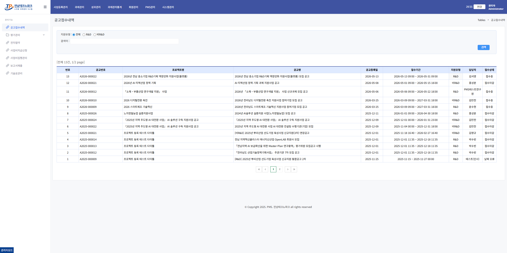
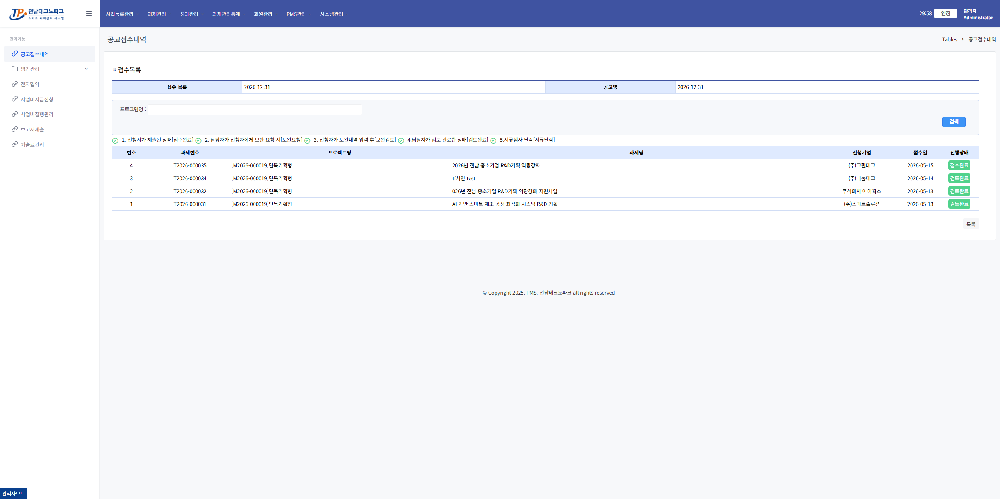
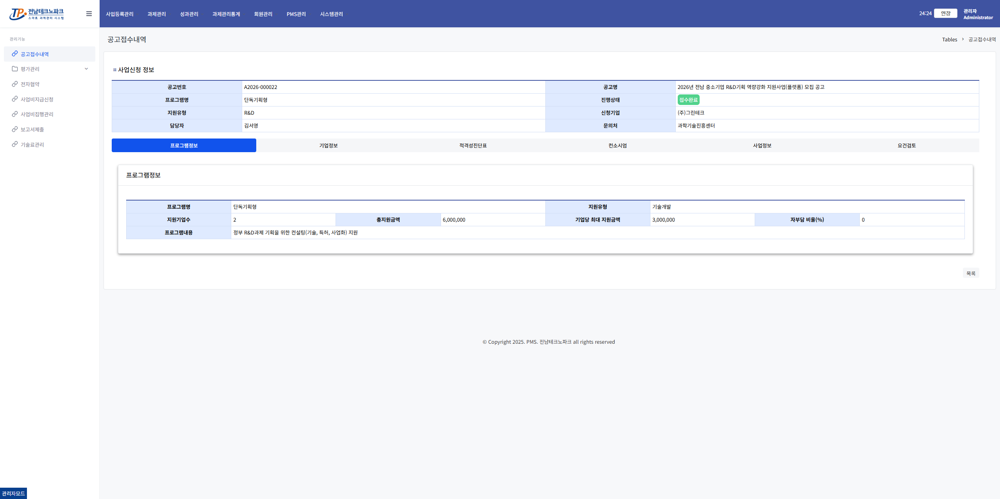
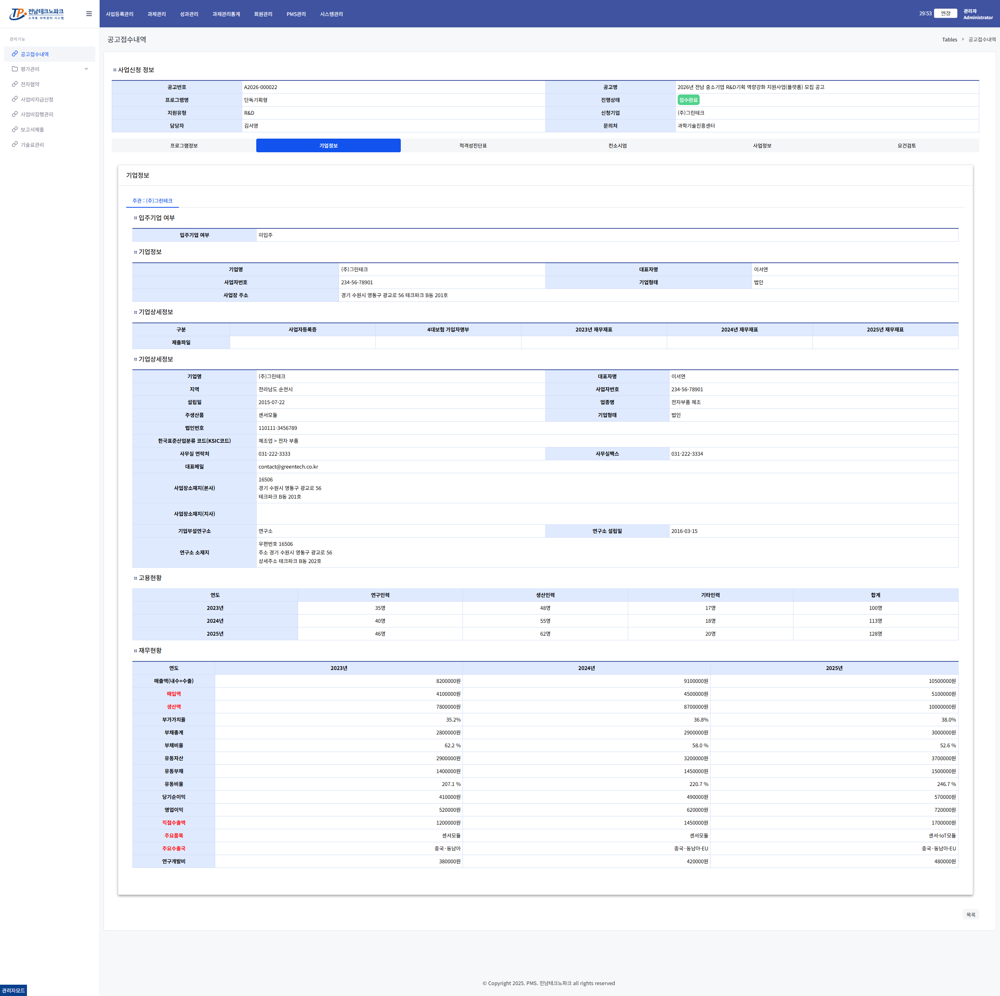
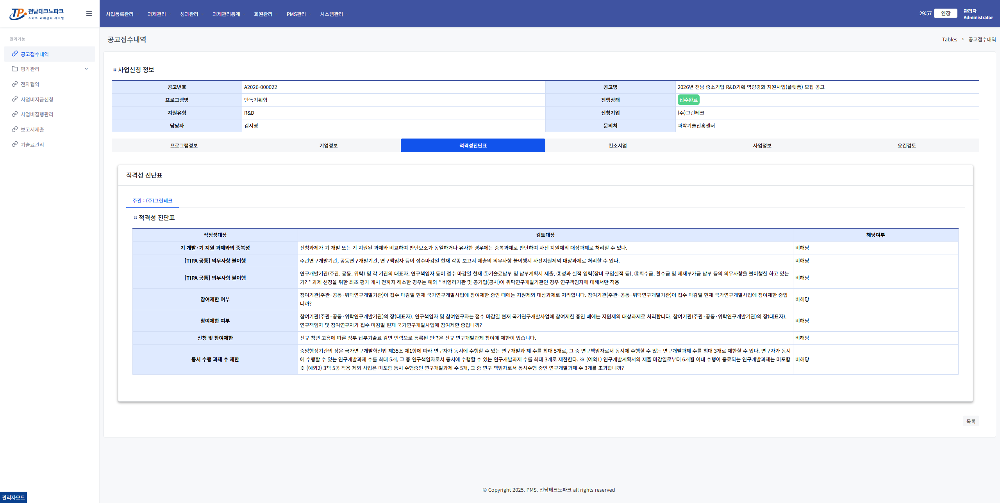
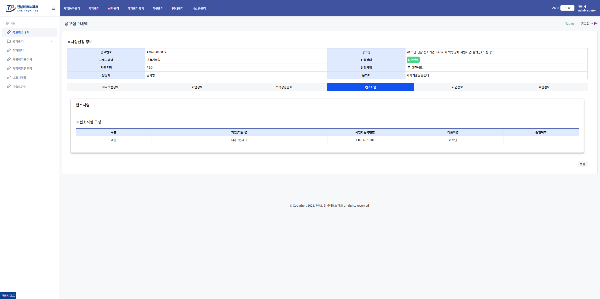
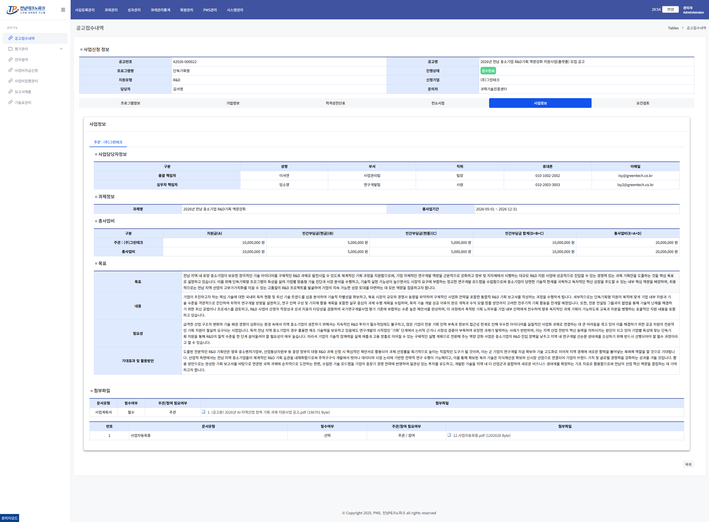
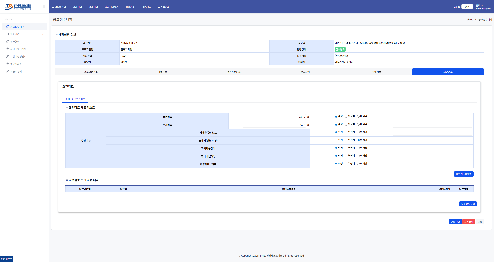

요건검토 / 보완요청 관리자
1. 공고접수내역 목록 진입
왼쪽 메뉴 「과제관리」 → 「공고접수내역」 클릭

공고 행 클릭 → 접수목록에서 검토할 신청서 행 클릭

2. 프로그램정보 확인
사업공고명·프로그램명·지원분야·총사업비 등 신청 정보를 확인합니다.

3. 기업정보 확인
기업이 제출한 임직원 현황·재무정보·사업자등록증 등을 검토합니다.

4. 적격성진단표 확인
기업이 제출한 항목별 해당 / 비해당 응답 내용을 검토합니다.

5. 컨소시엄 확인 (해당 시)
참여기관 정보 및 참여완료 여부를 확인합니다.

6. 사업정보 확인
과제명·연구기간·예산·사업계획서 파일 등을 검토합니다.

7. 요건검토 체크리스트 작성
항목별 적정 / 부적정 / 미해당 선택 후 「저장」 클릭

⚠️ 주의사항
모든 항목에 응답해야 저장됩니다.
8. 보완요청 (필요 시)
보완이 필요한 내용을 입력하고 「보완요청」 버튼 클릭

⚠️ 주의사항
보완요청 후 기업 담당자가 보완 내용을 확인하고 답변을 제출해야 합니다.